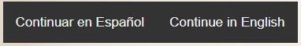
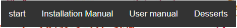
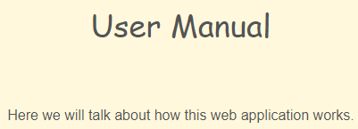
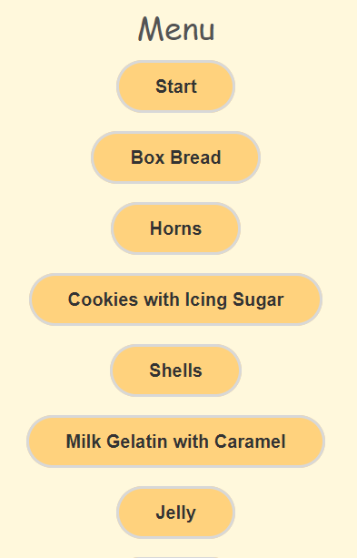
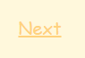
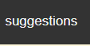

User Manual
Here we will talk about how this web application works.
The first thing will be to select the language in which we want to work.

Once the language is selected, we will choose what we want to see.

In the installation manual, this appears.
This will appear in the user manual that you are reading.

In desserts this will appear and you just have to click on the reseta you want.

We also have suggestions that appear in certain dessert recipes and are represented by these buttons. These are recipe suggestions that you can make with desserts.
